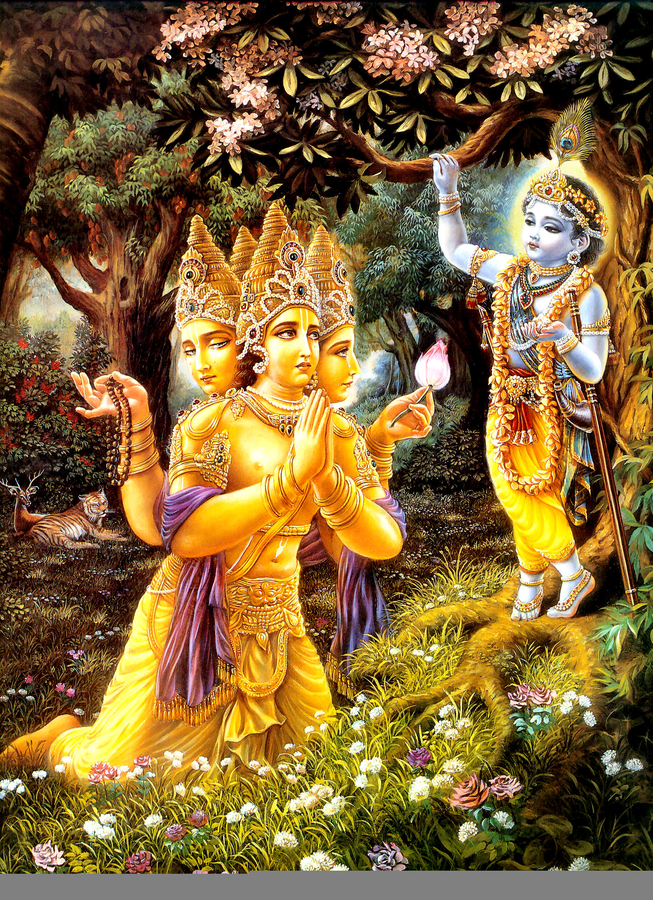

"When meditation is mastered, the mind is unwavering like the flame of a lamp in a windless place." – Bhagavad Gita 6.19
"From the pores of Mahavishnu’s body, countless universes emerge, and with each of His breaths, creation and destruction occur again and again."— Bhagavata Purana
In the vast metaphysical vision of Sanatana Dharma, Mahavishnu lies in the Causal Ocean (Karanodaka) — a boundless, eternal ocean of transcendence. In each exhalation, countless universes (Brahmandas) emanate from His body like bubbles. And in each inhalation, those universes dissolve back into Him.
Each universe is not just a lifeless construct of matter and space — it is a living entity, governed by its own Brahma, its own cosmic cycle of creation, preservation, and dissolution.
This breathing of Mahavishnu is described as cyclical and eternal — universes are born, expand, dissolve, and are reborn again, much like the pulse of the divine. Modern physicists speculate about cyclical universes, cosmic expansion and contraction, heat death and rebirth — unknowingly echoing the Vedic understanding of time and creation that has existed for thousands of years.
One of the most profound and metaphysically rich stories in the Srimad Bhagavatam is the Brahma-Mohan Lila — the “bewilderment of Brahma.”
One day, Lord Brahma, the creator of our universe, visits Vrindavan to witness the child Krishna’s activities. To test if this cowherd boy is truly divine, Brahma steals Krishna’s calves and friends and hides them in a cave using his divine powers.
But Krishna, who is the Supreme Being, instantly manifests identical replicas of each of them — exact in personality, appearance, and relationship — so perfect that not even their mothers notice any difference.
A year later, when Brahma returns, he is bewildered to see both the original boys and calves (that he had hidden) and their duplicates simultaneously existing.
Krishna reveals his divine form — showing Brahma countless universes in which countless Brahmas exist, each presiding over their own cosmic creation. Some have one head like ours, others have hundreds or thousands, depending on the scale and complexity of their respective universes.
At that moment, Brahma — the engineer of our entire universe — is shocked and humbled. He realizes that his intellect and power are but a spark of Krishna's unlimited potency. Overwhelmed with awe, he falls at Krishna’s feet, begging forgiveness.
This Lila is not just a theological tale. It is a metaphysical revelation. It reveals that:
This concept resonates deeply with the Many-Worlds Interpretation of quantum physics, and the Multiverse Hypothesis of modern cosmology.
If Krishna can manifest infinite versions of beings, simultaneously, within infinite realities, it suggests that the universe is holographic, fractal and multidimensional — not linear and finite as once thought.
Mahavishnu is the source of all these universes. Each universe is born when He exhales and dies when He inhales. This cycle is so vast that the entire lifespan of Brahma is just one breath for Mahavishnu.
“Many thousands of universes pass through the pores of the body of Mahavishnu during each exhalation.”— Brahma-samhita 5.48
This is the ultimate cyclical model of the cosmos. Not only is time cyclical (as explained in the concept of Kala), but space and existence itself are cyclically created and destroyed — like a cosmic heartbeat.
Mahavishnu’s breath is the pulse of the multiverse.
As modern physics approaches the edge of known reality, it stumbles upon ideas that have been intuitively known in the Vedic tradition for millennia. The multiverse, the holographic nature of the universe, the role of the observer, and the cyclical unfolding of time — all of these align closely with Vedic cosmology.
But while science speculates, Vedic wisdom experiences. Through stories like the Brahma-Mohan Lila and the revelations of Mahavishnu, we are offered a vision of the universe not as a cold mechanism, but as a living, divine organism, where consciousness is the creator, sustainer, and experiencer of all things.
And behind it all, Mahavishnu lies silently in yogic slumber, dreaming worlds into being — with every breath, infinite universes are born and dissolve, eternally.
"When meditation is mastered, the mind is unwavering like the flame of a lamp in a windless place." – Bhagavad Gita 6.19

Sanatana Dharma and Jewish Mysticism (Kabbalah)

Did you know that Saraswati is worshipped in Japan as Benzaiten?
For any queries or meaningful conversations, feel free to reach out to me via email.